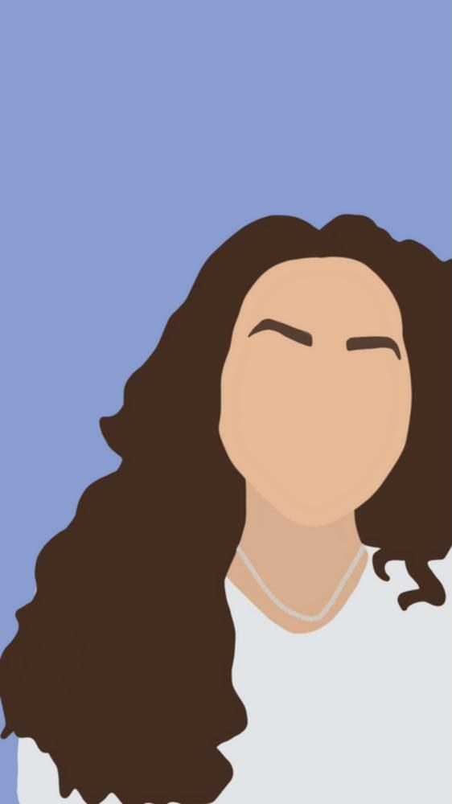
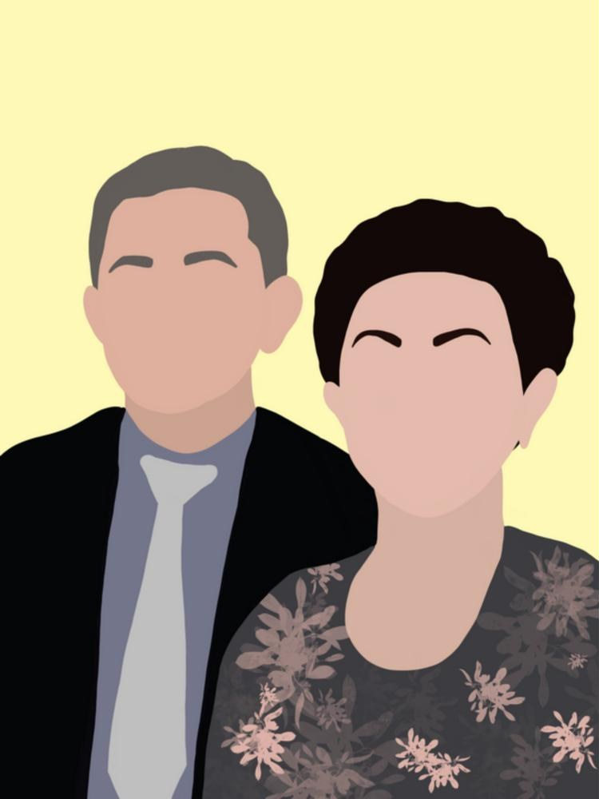
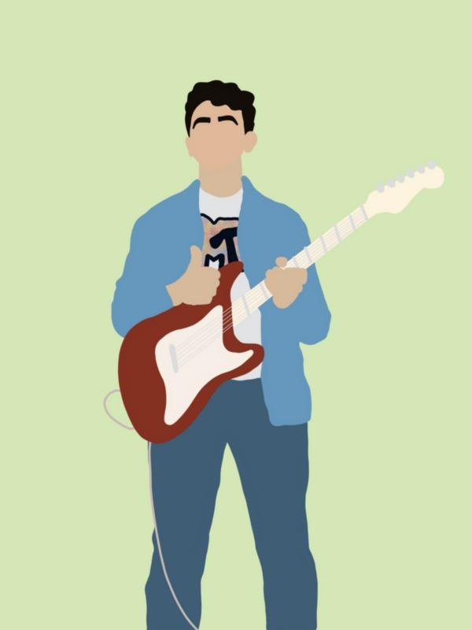
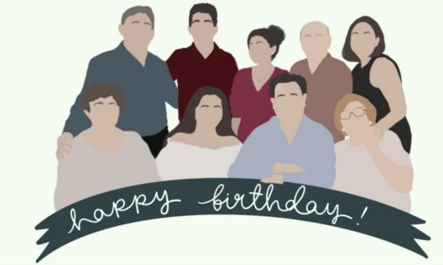

Illustration
digital portraits
Portraits of friends and family, drawn entirely by hand on my iPad in Procreate.
ProcreatePersonal work

Medium
Digital illustration
Tools
Procreate on iPad
Style
Flat color, no faces
Subjects
Friends, family and gifts





A creative practice outside of work, and often a gift.
more of my work